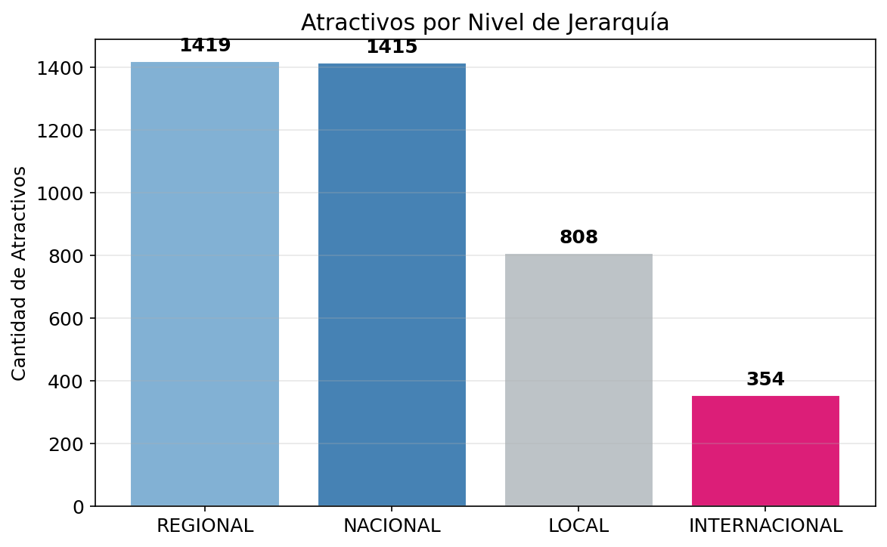
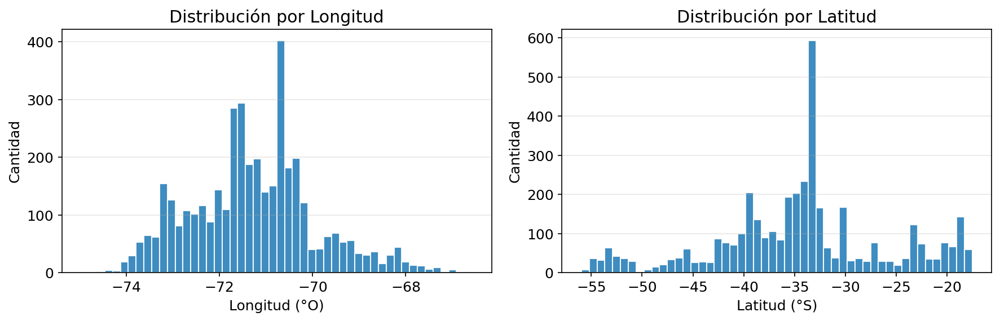
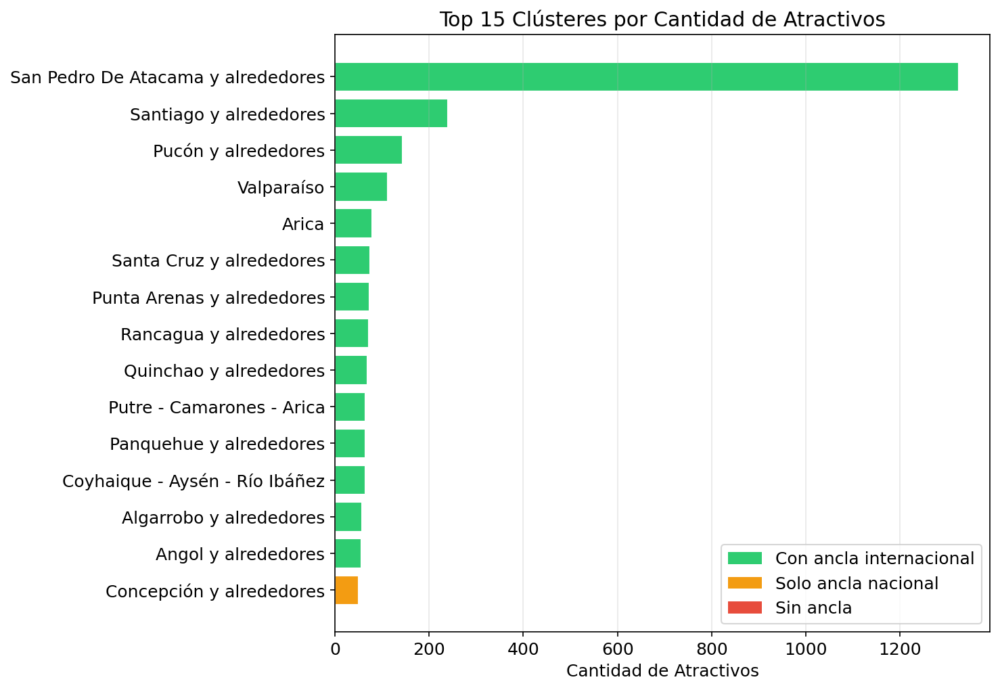
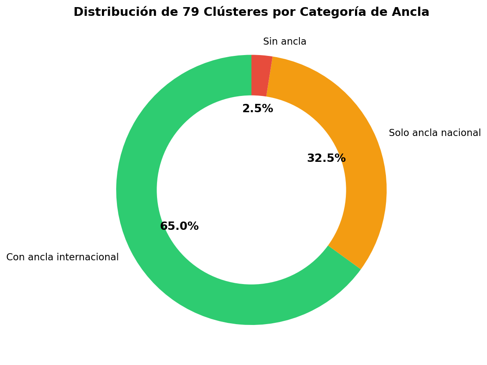
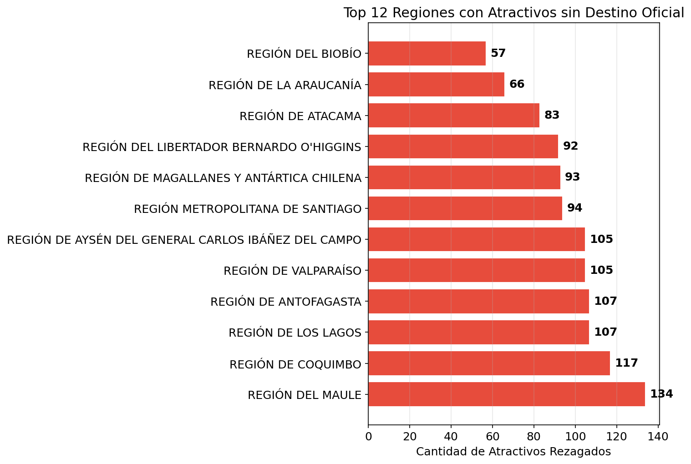
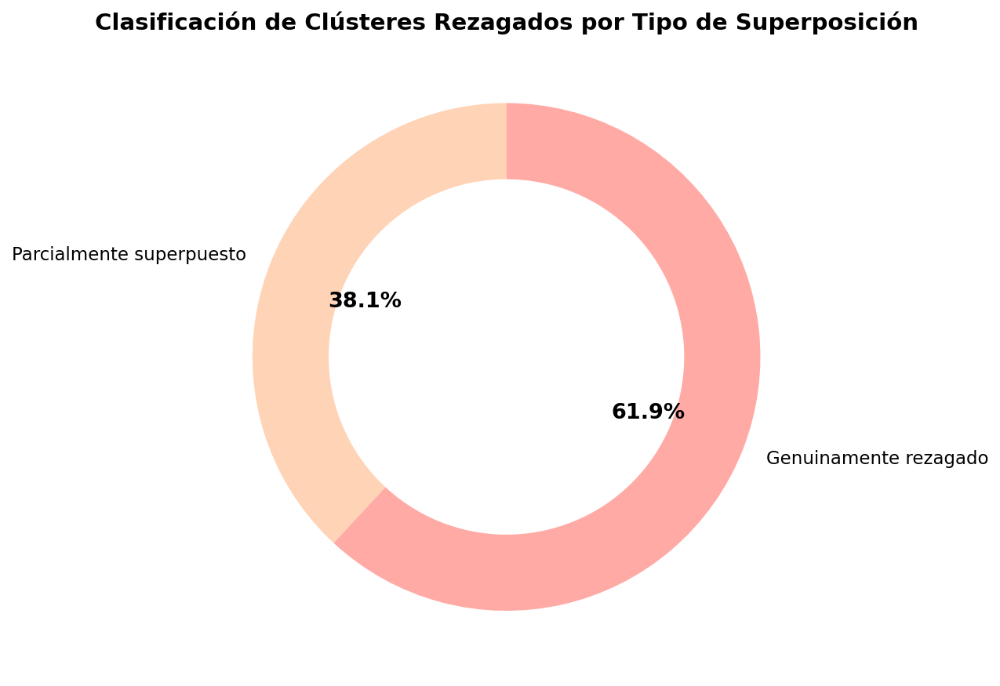
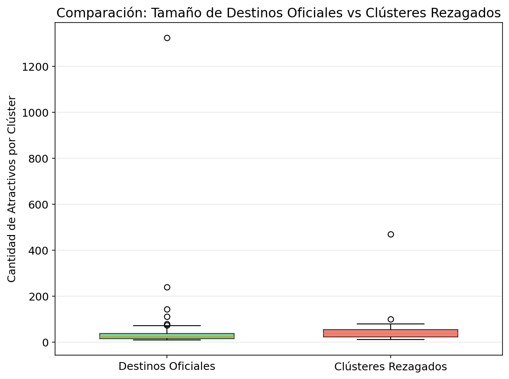

Atractivos Ancla y Brechas en los Clústeres Turísticos de Chile
Chile cuenta con diversos atractivos turísticos distribuidos a lo largo de su territorio. Algunos cuentan con atractivos de jerarquía internacional que funcionan como anclas que "tiran" la oferta turística del territorio. En este análisis identifico qué proporción de los clústeres turísticos carecen de estas anclas, qué caracteriza a esas agrupaciones y cuáles representan oportunidades de inversión.
Mediante clustering espacial (HDBSCAN con métrica Haversine) sobre las coordenadas de 3.996 atractivos permanentes, identifiqué 79 clústeres territoriales. El hallazgo principal: el 33% de estos clústeres ya posee masa crítica turística reconocida a nivel nacional, pero carece de un atractivo de proyección internacional — representando oportunidades concretas de inversión para elevar la competitividad de esos destinos.
Los datos provienen del registro oficial de atractivos turísticos 2020 del Servicio Nacional de Turismo de Chile.
El mapa a continuación muestra los 3.996 atractivos coloreados por jerarquía. Haz click en cualquier punto para ver su detalle, o activa capas adicionales desde el panel de checkboxes. Más abajo encontrarás el análisis completo.
1. Exploración Inicial
El dataset contiene 4.048 atractivos turísticos. Para este análisis nos centramos en los atractivos permanentes, descartando los "Acontecimientos Programados" (eventos temporales). Tras validar coordenadas dentro de los límites continentales de Chile, quedamos con 3.996 registros.
Cada atractivo está clasificado por jerarquía: Local, Regional, Nacional o Internacional.

Los histogramas de coordenadas confirman la cobertura esperada: Chile continental entre -17° y -56° de latitud, y -66° a -75° de longitud. Se identifican también los registros de las islas Robinson Crusoe y Rapa Nui.

2. Clustering Espacial
¿Por qué HDBSCAN?
Los atractivos turísticos en Chile presentan densidades muy variables — zonas densas como Santiago versus zonas dispersas como Aysén. Utilicé HDBSCAN porque se adapta automáticamente a diferentes niveles de densidad sin necesidad de fijar un radio de búsqueda ni la cantidad de clústeres.
Respecto a la métrica de distancia, inicialmente probé K-means, pero los clústeres resultantes mostraban puntos lejanos como agrupados. Esto ocurre porque K-means usa distancia euclidiana, que no considera la curvatura de la Tierra. La métrica Haversine calcula la distancia esférica real entre coordenadas geográficas.
Para el parámetro min_cluster_size=10, un grupo de al menos 10 atractivos constituye un clúster territorial relevante.
Resultado: 79 clústeres identificados. El 33.2% de los atractivos no se asigna a ningún clúster — estos atractivos rezagados requieren un análisis más profundo que abordamos en la sección 5.
Distribución por Clústeres

3. Análisis de Brechas: Clústeres sin Atractivo Ancla
¿Qué es un atractivo ancla?
El concepto proviene del retail: en un centro comercial, la tienda ancla es aquella marca de alto reconocimiento que genera el flujo de visitantes del que se benefician todas las demás tiendas. En turismo, la lógica es la misma: un atractivo ancla es aquel de jerarquía superior cuyo reconocimiento motiva el desplazamiento de turistas hacia un destino, beneficiando al resto de la oferta turística local.
Esta idea se formaliza en la anchor-point theory (Golledge, 1978), que propone que las personas organizan su conocimiento espacial de forma jerárquica alrededor de puntos ancla de mayor importancia.
Clasificación de clústeres
Definí tres categorías según la presencia de atractivos de jerarquía superior:
| Categoría | Definición |
|---|---|
| Con ancla internacional | Al menos 1 atractivo de jerarquía INTERNACIONAL |
| Solo ancla nacional | Al menos 1 NACIONAL, pero 0 INTERNACIONAL |
| Sin ancla | Sin atractivos NACIONAL ni INTERNACIONAL |
Los clústeres "solo ancla nacional" son particularmente interesantes: ya tienen masa crítica turística reconocida a nivel país, pero carecen de un atractivo de proyección internacional. Estos representan oportunidades de inversión para elevar su competitividad.

4. Conclusión Parcial: Clustering General
El análisis clustering inicial revela que 79 clústeres territoriales se forman a nivel nacional usando HDBSCAN con la métrica Haversine. De estos, una proporción significativa opera sin un atractivo ancla de jerarquía internacional. Los clústeres clasificados como "solo ancla nacional" (26 en total) son especialmente relevantes: ya poseen reconocimiento a nivel país y masa crítica de atractivos, pero carecen del elemento diferenciador que atraiga turismo internacional.
Sin embargo, este análisis inicial solo captura el 66.8% de los atractivos en clústeres coherentes. El restante 33.2% (1.325 atractivos) quedan sin agrupación espacial clara. Estos atractivos dispersos — que denominamos rezagados — representan una segunda oportunidad de análisis: ¿forman efectivamente clústeres subrepresentados? La siguiente sección aborda esta pregunta.
5. Clústeres Rezagados: Una Segunda Dimensión del Análisis
En HDBSCAN, los puntos que no se asignan a ningún clúster se denominan técnicamente "ruido" (noise). Sin embargo, "ruido estadístico" no equivale a "irrelevancia turística". En este proyecto los denominamos clústeres rezagados: agrupaciones de atractivos que no alcanzaron la masa crítica requerida por el clustering principal pero que, al re-analizarlos por separado, forman clústeres con potencial turístico subrepresentado.
Los 1.325 atractivos clasificados como rezagados en el clustering inicial no son simplemente "aislados". Muchos están geográficamente próximos pero bajo las densidades requeridas por HDBSCAN (min_cluster_size=10). Al aplicar nuevamente HDBSCAN a este subconjunto con los mismos parámetros, se identifican 21 clústeres adicionales que agrupan a 855 de estos atractivos (el 64.5% de los rezagados).
Estos clústeres rezagados representan atractivos que:
- No alcanzan masa crítica turística visible para el modelo principal
- Están dispersos geográficamente pero con cierta proximidad
- Frecuentemente carecen de atractivos de jerarquía nacional o internacional
Es decir, son atractivos rezagados que podrían beneficiarse de agrupamiento estratégico e inversión focalizada.
6. Caracterización Geográfica de Atractivos Rezagados
La distribución regional de los 1.325 atractivos no agrupados muestra concentración en ciertas zonas:

Las regiones de O'Higgins, Biobío y Los Ríos lideran en cantidad de atractivos sin agrupamiento claro. Esto puede indicar:
- Oportunidades de crecimiento: Si estos atractivos se desarrollan estratégicamente, podrían formar clústeres competitivos
- Fragmentación territorial: La ausencia de anclas fuertes podría dificultar la coordinación turística regional
7. Diagnóstico de Superposición: Clústeres Rezagados vs Clústeres Generales
Un aspecto crítico es entender cómo se relacionan los clústeres rezagados con los clústeres del análisis general. ¿Se solapan? ¿Son complementarios? ¿Genuinamente independientes?

La clasificación revela tres tipos de superposición (porcentajes calculados geométricamente a partir de las envolventes convexas):
- Contenido: Clústeres rezagados que caen dentro de los límites del clustering general. Son atractivos secundarios dentro de destinos ya identificados.
- Parcialmente superpuesto: Clústeres que intersectan con clústeres generales pero mantienen independencia. Podrían constituir subzonas especializadas.
- Genuinamente rezagado: Clústeres completamente fuera de los clústeres principales. Estos representan espacios geográficos sin cobertura en el análisis inicial.
Implicancias de Política Pública
- Densificación selectiva: En clústeres "contenidos", la estrategia debe ser fortalecer los atractivos existentes sin competir con anclas principales.
- Especialización de nichos: Los clústeres "parcialmente superpuestos" son ideales para desarrollar ofertas turísticas especializadas (turismo de aventura, gastronómico, etc.) que complementen — sin replicar — la oferta general.
- Infraestructura territorial: Los clústeres "genuinamente rezagados" requieren inversión en conectividad y servicios básicos para emerger como destinos independientes.
8. Comparación de Tamaños: Rezagados vs Clusters Reconocidos
Una pregunta natural es: ¿Qué tan grandes son realmente los clústeres rezagados? ¿Algunos alcanzan las dimensiones de destinos establecidos?

El boxplot muestra que algunos clústeres rezagados alcanzan tamaños comparables a los destinos ya identificados. La mediana de atractivos por clúster rezagado (~25 atractivos) es similar a la de clústeres generales, aunque con mayor variabilidad. Esto sugiere que la clasificación de un clúster como "rezagado" responde más a densidad espacial y jerarquía de anclas que a falta de potencial turístico.
9. Conclusión Final: Hacia un Mapeo Integral de Oportunidades
El análisis de dos capas — clústeres principales + clústeres rezagados — revela un panorama turístico chileno más complejo que lo que sugiere el clustering convencional:
- Los 79 clústeres principales representan espacios turísticos con masa crítica y (frecuentemente) anclas de jerarquía nacional o internacional. De estos, 26 carecen de anclas internacionales, generando oportunidades concretas de inversión.
- Los 21 clústeres rezagados —surgidos de atractivos no agrupados en el análisis principal— representan espacios de desarrollo emergente. No son espacios vacíos, sino territorios con potencial subutilizado.
- La superposición parcial entre ambas capas sugiere que el territorio turístico chileno tiene estructura jerárquica: destinos "núcleo" rodeados de oferta complementaria. Esto abre oportunidades para especialización y diferenciación territorial.
Recomendaciones:
- Fondos para anclas internacionales: Dirigidos a los 26 clústeres "solo ancla nacional", con mayor retorno esperado.
- Fondos para conectividad: Dirigidos a clústeres rezagados "genuinamente independientes", para mejorar acceso y servicios.
- Fondos para especialización: Dirigidos a clústeres "parcialmente superpuestos", para desarrollar nichos turísticos diferenciados.
Stack Técnico
| Componente | Tecnología |
|---|---|
| Clustering espacial | HDBSCAN (métrica Haversine) |
| Procesamiento | Python, Pandas, NumPy |
| Geoespacial | Shapely, SciPy |
| Mapas interactivos | Folium, PyDeck |
| Visualización | Matplotlib, Seaborn |
| Testing | pytest |
📓 Metodología completa: El detalle del análisis, incluyendo la comparación con destinos oficiales de SERNATUR y el diagnóstico de atractivos rezagados, está disponible en el notebook de Google Colab.